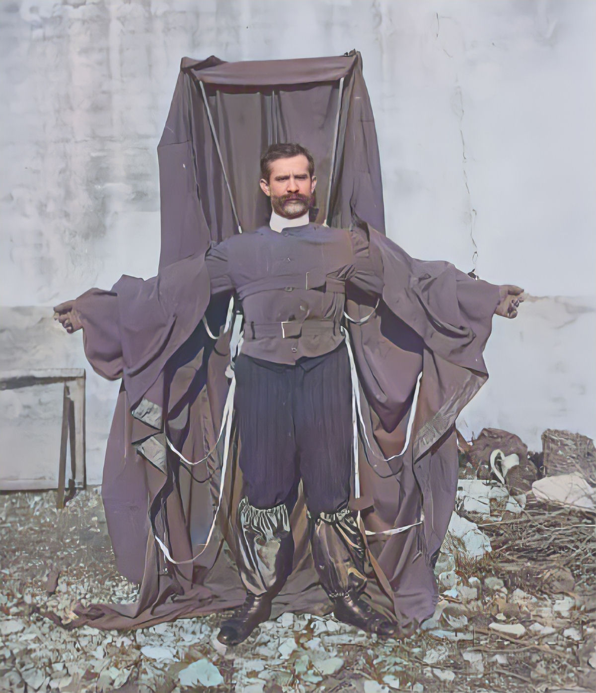
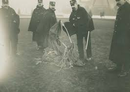
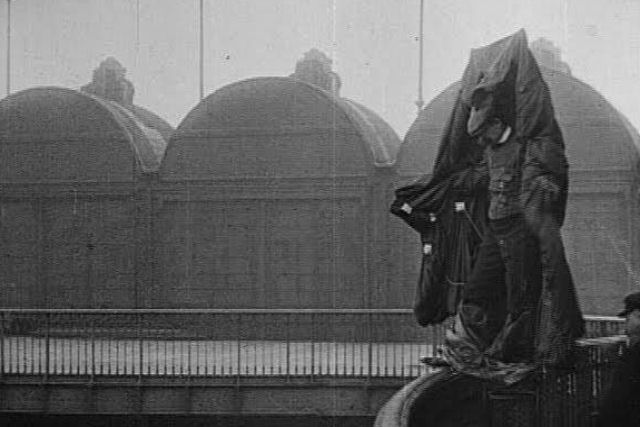
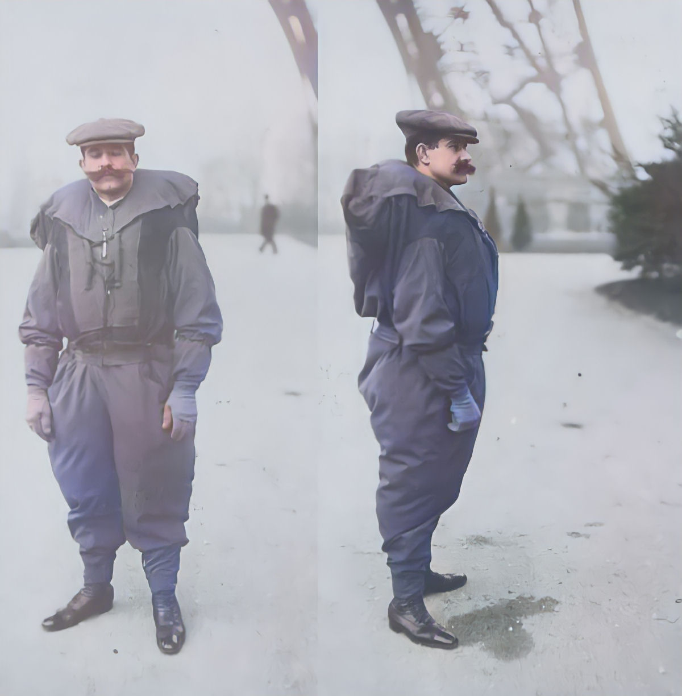
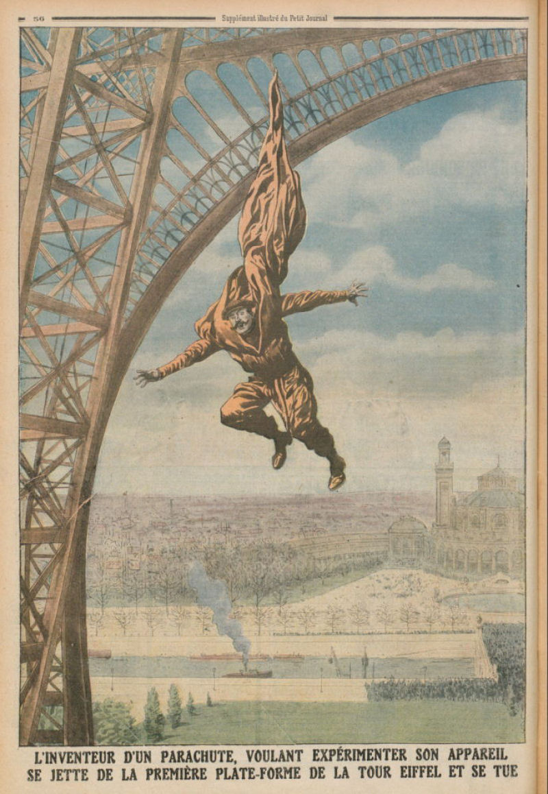

Franz Reichelt

Franz Reichelt vestindo seu traje de paraquedas.

Primeiro salto e único de paraquedas por Louis-Sébastien Lenormand, em 1783.

Franz Reichelt mostrando seu traje antes do salto.

Ilustração da época com o salto de Franz Reichelt.
História
Nós já falamos em um par de oportunidades, a en passant, sobre o "pioneiro" Franz Reichelt, mas hoje vamos dedicar todo este artigo à sua história kafkiana e absurda. O acervo de filmes da British Pathé tem um vídeo assustador dele pulando para a morte da Torre Eiffel, em 1912.
Nas cenas ele usa um traje enorme, precursor do wingsuit, enquanto permanece sorumbático de pé na saliência do primeiro nível da torre. Franz hesita por alguns longos segundos e então mergulha e cai direto no chão.
O austríaco Franz Reichelt era dono de uma bem-sucedida alfaiataria em Paris. Pouco depois de abrir a loja, ele ficou obcecado em desenvolver um tipo de paraquedas que pudesse vestir para ser usado como um traje que proporcionasse sustentação em um salto de quaisquer alturas.
O princípio de funcionamento do paraquedas básico foi elaborado por inventores centenas de anos antes dos humanos levantarem voo. Um dos primeiros esboços pode ser encontrado nos cadernos de Leonardo da Vinci.
"Se um homem tiver uma tenda feita de linho... ele será capaz de se jogar de qualquer grande altura sem sofrer qualquer lesão", escreveu Da Vinci.
O inventor croata Fausto Veranzio melhorou o design, e mais tarde Louis-Sébastien Lenormand realizou o primeiro salto de paraquedas com sucesso no século XVIII.
Com o avanço da aviação, surgiu a necessidade de paraquedas funcionais. Charles Broadwick criou um modelo dobrável que funcionava com linha estática.
Franz Reichelt começou a trabalhar em seu próprio traje. Seus primeiros modelos eram pesados e ineficientes, e todos os testes com manequins falharam.
Mesmo assim, ele persistiu, reduziu o peso e aumentou a área do traje, acreditando que funcionaria melhor em maiores alturas.
Após muita insistência, conseguiu autorização para testar na Torre Eiffel, com a condição de usar um manequim — mas ele decidiu saltar pessoalmente.
No dia 4 de fevereiro de 1912, Franz subiu até o primeiro nível da torre, com cerca de 57 metros. Após hesitar por cerca de 40 segundos, saltou.
O paraquedas não funcionou corretamente. Ele caiu diretamente no chão e morreu instantaneamente.
Sua atitude gerou grande repercussão na época. Alguns o consideraram um visionário, outros um imprudente.
Franz ficou conhecido como "O Alfaiate Voador" e sua história continua sendo lembrada até hoje como um dos episódios mais marcantes da história da aviação.